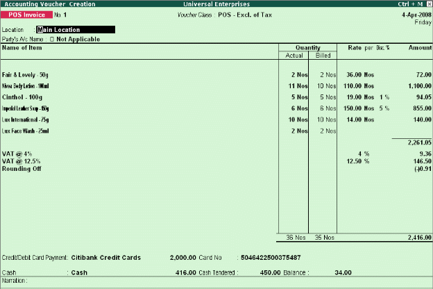

POS Invoicing
A Point of Sale is either a retail shop, a check-out counter in a shop or any other location where sales transactions take place. Tally.ERP 9's POS feature is fully integrated with Accounts and inventory functions. You can POS Invoice with Cash and Credit/Debit card transactions and effectively manage gift coupons, vouchers, discount coupons etc.
To activate POS Invoicing,
Go to Gateway of Tally > Accounts Info. > Vouchers Type > Create
# Type name of the voucher type
# Select Sales as voucher type and other details
# Set Use for POS Invoicing to Yes
# Type the details in Message 1 & Message 2
# Specify the details in Default Print Title and save screen
To record POS transaction,
Go to Gateway of Tally > Accounting Vouchers > F8: Sales
# Select name of the POS Invoice
# Enter details of the voucher
# Save screen

To view POS Register,
Go to Gateway of Tally > Display > Account Books > POS Register
You can view the sales made through Gift Vouchers, Credit/Debit Card Payment, Cheque, Cash and Total details.